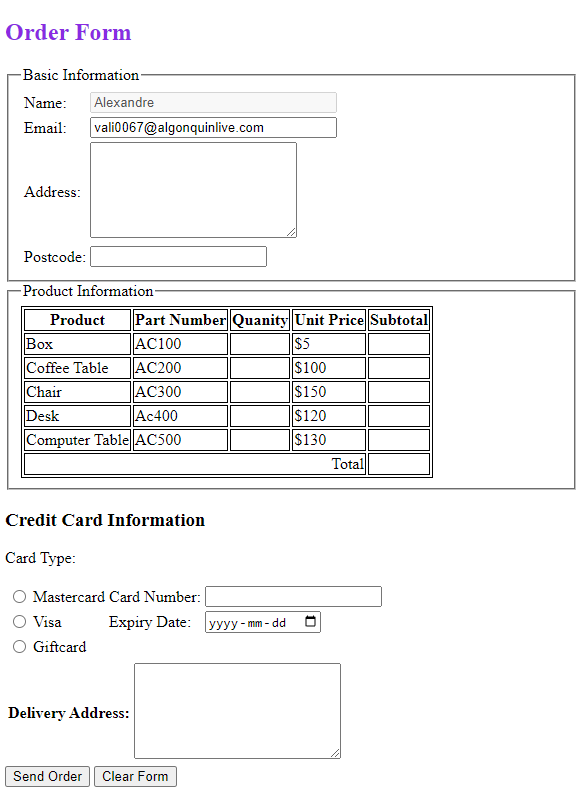
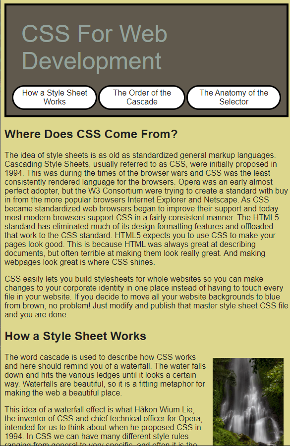

OBJECTIVE
My current career objective, is to start a career software development, I would like to end my career as a game developer.
LANGUAGES, COMPETENCES AND QUALITIES
- Good oral and written communication in French and English
- Good knowledge of technology repairs such as computers, cellular phones, gaming consoles
- Self-sufficient, punctual, reliable and motivated
- Team player
- Responsible, problem solver
- Patient and persevering
EDUCATION
- Currently enrolled at Algonquin College in the Computer Programming program
- Graduated in June 2020 from École secondaire catholique Garneau.
- I successfully completed the "Technologie de l’information et des communications" (TIC) program at École secondaire catholique Garneau.
COMPUTER SKILLS
- Knowledge of the following computer software: CISCO Packet Tracer, Wireshark, VMware, VS Code, DaVinci Resolve, FL Studio.
- Knowlefge of the following Adobe software: Photoshop, Illustrator, Lightroom, Premiere Pro, Flash
- Programming Languages: Java, HTML, CSS, SQL
WORK EXPERIENCE
DESSUREAULT YOUR INDEPENDENT GROCER – Ottawa, ON Seafood and HRM Clerk (October 2017 - Present)
- Provide great customer service in a professional manner
- Ensuring that merchandise be displayed according to company standards
- Prepare food following the health standards, operating the point-of-sale system
Portfolio
(Pictures are clickable links to the projects)
Project 1
This projects is a simple order form template
Project 2
This project required me to format and html file thorugh css
